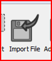
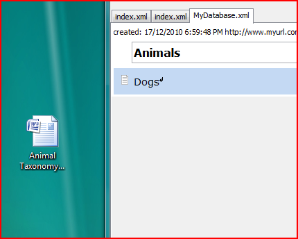
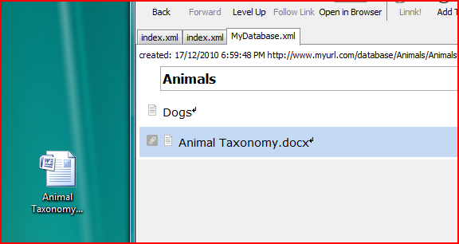
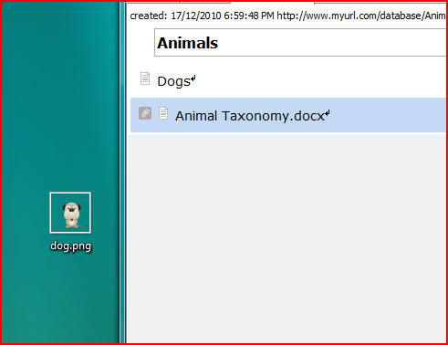
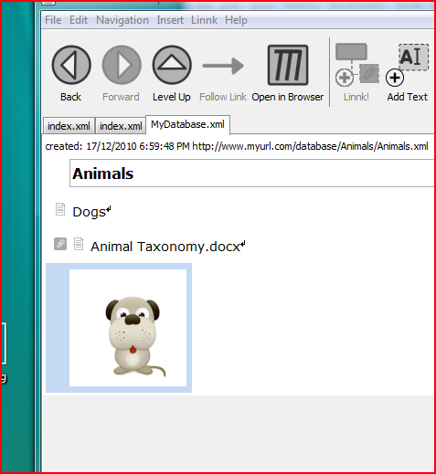

You can add files and images to your link documents either by 'dragging and dropping' them onto a Linnk document or by using the Import File Icon:

For drag and drop, you can drag and drop files from your local file browser (eg Windows Explorer or Mac OS X finder) into any link document.
For instance, in the following example, the file 'Animal Taxonomy' can be dragged from the desktop onto the Linnk document:

As a result, the document will be imported into the Linnk database. Please note that for this the file will be copied into the database, so if you delete the original file on the desktop, the file in the database will still be available.

You can open the associated file by clicking on the green arrow on the right or by double-clicking the item 'Animal Taxonomy.docx'.
If you drag and drop certain types of files (for instance images), Linnk will handle them according to their file type. For instance, if the user drags the file dog.png depicted on the screenshot below onto Linnk, the file will be inserted as a picture.


Adding images using the Import File Dialog works in the same way.